The last migration slice: the quickstart sample (shapes) and the three Android catalogue scenes that were held back from slices A–B2, migrated by the same tools (tools/migrate_scenes_legacy_rasterizer.py, tools/migrate_scenes_legacy_families.py), plus four scenes whose only frozen rasterizer was a commented-out chunk, found by the tools' new --audit (no live scene outside scenes/Tests/Legacy/ and visiblehuman has a frozen ACTIVE rasterizer). All renders at reduced resolution with the shipped sample counts and Sobol' value salts (3 for the four migrated scenes at long side 160; 1 at long side 96 for the comment-only scenes); thumbnails are salt 1, the PRE-denoise image composited over black (RGB × coverage alpha), linear Rec.709 luminance of that image, mean over the salts (± is the salt-to-salt sd). The "Final, denoised" column is the shipped OIDN output (denoising stays on as authored).
scenes/Tests/Geometry/shapes.RISEscene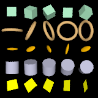
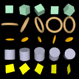
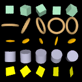
Mean 0.130026 → 0.129872 (-0.12%). printf "render\nquit\n" | ./bin/rise scenes/Tests/Geometry/shapes.RISEscene renders 800×800 in 0.63–0.66 s (legacy 0.60–0.64 s) and no longer logs the frozen-rasterizer warning. The quickstart command is unchanged; README / AGENTS / CLAUDE now say what it writes and that rendered/ must exist.
| Scene | Before (legacy) | Migrated (raw, before retune) | Final (raw) | Final, denoised | Mean Y before | Mean Y migrated | Mean Y final | Change | Measured cause |
|---|---|---|---|---|---|---|---|---|---|
Tests/Geometry/shapes.RISEscene | – | 0.130026 ±5.66e-05 n=3 | – | 0.129872 ±5.01e-05 n=3 | -0.1% | Unchanged within noise: one directional light from the camera, black background, no surface sees another strongly enough to matter at bounce 0. CLI quickstart render 0.63-0.66 s (legacy 0.60-0.64 s, 3 runs each, 800x800); the FROZEN-rasterizer warning is gone; the pre-existing negative-radiance (Mitchell filter, max 4.5e-7) warning is in both. | |||
FeatureBased/Parser/kaleidoscope_atrium.RISEscene | 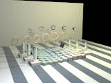 | 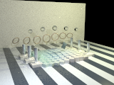 | 0.422712 ±9.57e-05 n=3 | 0.444561 ±0.000117 n=3 | 0.422667 ±5.07e-05 n=3 | -0.0% | Decomposed (3 salts each): rasterizer only (legacy materials, PT full GI) 0.4726 (+11.8%); same at max_diffuse_bounce 0: 0.4066 (-3.8%), so the legacy chains (global/glass shaders direct-only or Whitted) omitted ~16% indirect light; materials only (still pixelpel) 0.3997 (-5.5%, legacy models invented energy). Migrated as tool output 0.44456 (+5.2%); both causes are legacy biases, so the lights were scaled back: 0.42267 vs legacy 0.42271 (-0.01%). The look gains indirect fill on the back wall and loses some floor/ring gloss energy. | ||
FeatureBased/Combined/tidepools.RISEscene | 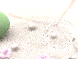 | – | 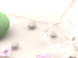 | 0.977168 ±0.00117 n=3 | – | 0.96477 ±0.000893 n=3 | -1.3% | -1.3% whole image (clipped-at-1 mean -1.0%, half the frame is the over-1 Uffizi sky). The polished coat renormalised its substrate and reflected ~2x more than coated (B2 furnace: 0.526 vs 0.327 over a 0.5 substrate); the small shell becomes a view-dependent pearl. No retune applied: under 2%, below anything B1/B2 retuned (smallest 14.6%); proposal if wanted: scale every light and the radiance_map by x1.013. | |
FeatureBased/PathTracing/pt_jewel_vault.RISEscene | 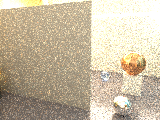 | – | 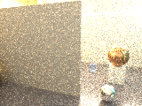 | 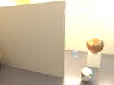 | 11.052 ±0.0181 n=3 | – | 11.0506 ±0.00291 n=3 | -0.0% | -0.01% whole image, -0.6% clipped-at-1 mean (23% of pixels are the over-exposed slot light). The metals are small; GGX with the Schlick F0 = rs carries about the same energy as the Ward/Ashikhmin lobes here. Render time at 160 px fell 205-226 s → 102-111 s (adaptive sampling converges sooner). No retune. |
FeatureBased/BDPT/bdpt_torus_chain_atrium.RISEscene | 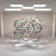 | – | 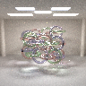 | 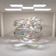 | 0.876246 n=1 | – | 0.876836 n=1 | +0.1% | Identical scene to the parser (CstDeriveGolden digest unchanged). One salt at long side 96: +0.07%, multithreaded run-to-run noise. |
Tests/SubsurfaceScattering/rwsss_bdpt.RISEscene | 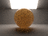 | – | 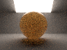 | 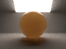 | 0.425066 n=1 | – | 0.424689 n=1 | -0.1% | Digest unchanged. One salt at long side 96: -0.09%, run-to-run noise. |
Tests/Materials/spectral_skinmodel.RISEscene | – | 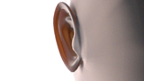 | 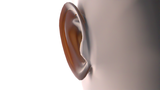 | 1.53167 n=1 | – | 1.5317 n=1 | +0.0% | Digest unchanged. One salt at the shipped 960x540 (the long-side-96 reduction caught a commented-out film chunk; thumbnails downscaled): +0.002%. | |
Tests/Painters/painters.RISEscene | 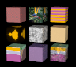 | – | 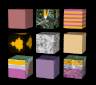 | 0.131947 n=1 | – | 0.131959 n=1 | +0.0% | Digest unchanged. One salt at long side 96: +0.01%. |
kaleidoscope_atrium lights x0.951, because both components of its +5.2% are legacy biases (missing indirect light, invented material energy). Revert by restoring powers 80 / 132 / 95 / 35 if the brighter indirect look is preferred.tidepools x1.013 (-1.3% is below any earlier retune).kaleidoscope_atrium's design premise was "recursive reflections"; PT renders those (glass, GGX metals) without Whitted's depth cap, and its max_recursion 6 is gone (PT bounds paths itself). The tidepools shell keeps a view-dependent pearl colour (thin film) rather than the iridescent painter's two-colour blend.spectral_skinmodel and rwsss_bdpt do not have an MLT ACTIVE rasterizer; their MLT chunks were inside /* */ (as was bdpt_torus_chain_atrium's). The blocks are removed anyway. The only live scene with two rasterizer chunks is FeatureBased/VCM/vcm_sdf_luminaire_jellyfish (PT then VCM; VCM, the last, is active), which documents the double declaration on purpose (it reproduces an agent session) and is left as is.